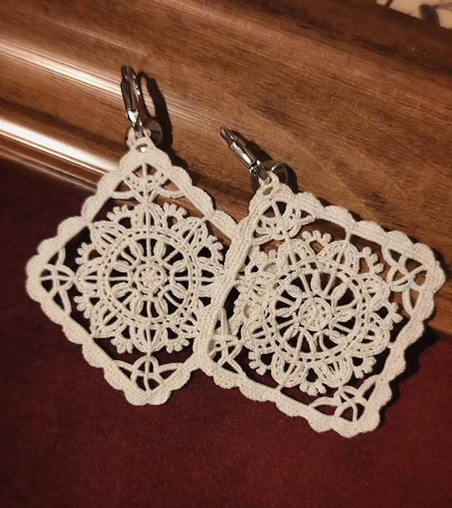

PRIVEZAK OD DOBROTSKE ČIPKE
€25

PONAT PO PONAT
NAJNOVIJI RADOVI

KO SMO MI?
Dobrotska čipka predstavlja jedno od najvažnijih nematerijalnih kulturnih dobara Crne Gore. Svaki komad izrađuje se ručno, ponat po ponat, koristeći tradicionalnu tehniku koja se prenosi generacijama. Naša radionica u srcu Kotora okuplja lokalne zanatlije i umjetnike, čuvajući i promovišući autentičnost ovog jedinstvenog zanata. Dobrotska čipka nije samo ukras – ona je simbol strpljenja, preciznosti i kulturnog identiteta Crne Gore.
Kroz organizaciju radionica, izložbi i radionica za posjetioce, nastojimo širiti svijest o postojanju značaju Dobrotske čipke. Naša misija je da ova drevna vještina ostane živa, da svaki komad priča priču o tradiciji i umijeću ruku koje ga stvaraju. Posjetioci našeg shopa mogu direktno kupiti unikatne proizvode, a takođe i naručiti čipku po mjeri, stvarajući lični spoj kulture baštine i suvremenog dizajna.


Pogledajte našu kolekciju gotovih, ručno izrađenih Dobrotskih čipki i drugih zanatskih proizvoda, spremnih za kupovinu.
SAZNAJ VIŠE
Naručite unikatni proizvod po vašoj želji i dizajnu. Popunite formu i naši zanatlije će stvoriti komad posebno za vas.
SAZNAJ VIŠE
PONAT PO PONAT
Vještina izrade dobrotske čipke zaštićeno je nematerijalno kulturno dobro Crne Gore. Dobrotska čipka je dobila naziv po naselju Dobrota i predstavlja lokalnu verziju italijanske čipke, a od nje se razlikuje po karakterističnim motivima koji su uglavnom geometrijski i čvršćim načinom izrade. Za izradu dobrotske čipke koristi se igla, konac, naprstak i makazice. Materijali koji se koriste su lan ili pamučno platno. Čipka se izrađuje preko papira koji je fiksiran za čvršću podlogu na kojem se koncem oblikuje motiv. Potrebno je tri do četiri sata rada da bi se uradio jedan najmanji jednostavan motiv.
Organizacijom radionica kao i apliciranjem čipke na upotrebne predmete širi se svijest stanovništva o postojanju i važnosti ove vještine. Ova stara i značajna vještina, kao nematerijalno kulturno dobro od nacionalnog značaja, mora da bude živa da bi zadržala taj status. Upoznavanjem lokalnog stanovništva sa osnovima vještine izrade dobrotske čipke se nastavlja čuvanje i život ovog značajnog nematerijalnog kulturnog dobra.


 01/12/2025
01/12/2025
Vještine koje traju: Zašto čuvamo rukotvorine
 01/12/2025
01/12/2025
Čipka u modernom dizajnu
 01/12/2025
01/12/2025
Materijali i tehnike: Tajne lokalnih umjetnika